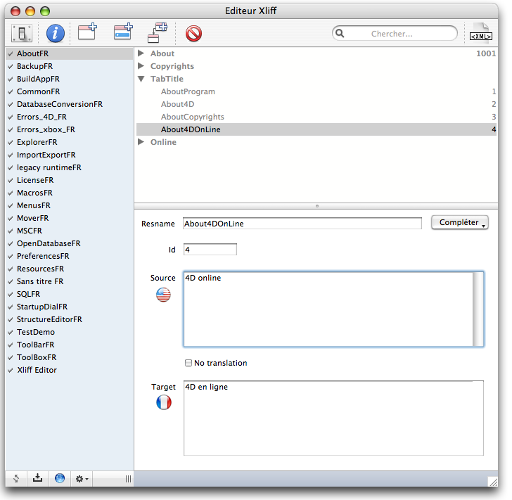
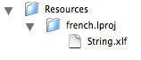
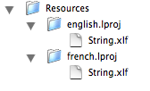
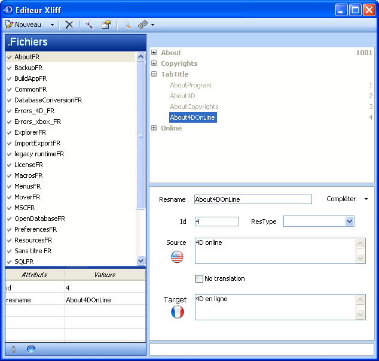
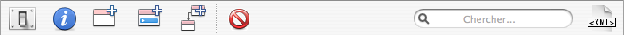
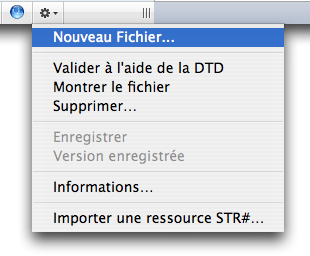

4DPop XLIFF |
|
|
|
||||
4DPop XLIFF est une base destinée à la gestion des fichiers XLIFF pour la localisation de vos bases de données. Cette base comprend également des outils qui permettront de minimiser l'impact du passage des ressources STR# et TEXT au standard XLIFF.
| 1. | Créez un dossier "Components" à côté du fichier de structure de votre base (".4db") |
| 2. | Placer le dossier "4DPop XLIFF.4dbase"* ou un alias de ce dernier dans le dossier "Components" |
| 3. | Ouvrez votre base. |
| 4. | Si le composant 4DPop est installé un nouveau bouton "xliff" se trouve dans la barre d'outils. Il permet d'ouvrir l'éditeur.
Si le composant 4DPop n'est pas installé il faut, pour lancer l'éditeur, sélectionner dans le menu "Exécuter" la ligne "Méthodes..." puis dans la liste des méthodes proposées sélectionner "xliff_EDITOR" et enfin cliquer sur le bouton "Exécuter" |
*Sur Macintosh, le composant est un package dont l'extension ".4dbase" n'est pas obligatoirement visible en fonction des réglages de vos préférences d'affichage.

À la première ouverture de l'éditeur, celui-ci se comporte différemment selon qu'il s'agit d'une base autonome ou d'un composant.
Dans les deux cas, la suite du fonctionnement est identique.
Note : |
Dans l'interface du composant et ce document, le parti a été pris de ne pas traduire les termes faisant référence à des balises ou des attributs de la norme xliff, leur traduction pouvant engendrer une certaine confusion. Ce sont essentiellement les termes "resname" "source" "target" "translate" "group" & "trans-unit". |
L'éditeur a été conçu pour faciliter la localisation d'une application en cours de développement, c'est-à-dire :
Le principe de la norme XLIFF conduit à déterminer une langue source dans laquelle sont écrites toutes les chaînes. Cette langue sera la langue de référence (celle à partir de laquelle se feront toutes les traductions). La deuxième langue de chaque fichier est la langue dite target qui sera utilisée pour les dialogues, alertes, impressions… C'est la langue de l'utilisateur.
L'éditeur a été prévu pour gérer 2 langues : une langue source qui sera souvent l'anglais et la langue de l'interface au moment du développement, mais ces deux langues peuvent êtres identiques. Ce sont les localisateurs qui fourniront les autres jeux de langue à partir des fichiers que vous leur fournirez.
À la première ouverture, l'éditeur s'efforce de déterminer sur la base du contenu du dossier de travail, de la langue du système et de celle de l'application les valeurs par défaut pour la langue source et la langue target. Cette recherche peut par exemple dans le cas d'un dossier vide, d'un système suédois et d'un 4D anglais déduire que la langue source sera l'anglais et la langue target le Suédois. Dans le cas d'un système français et d'un 4D français la langue source et la langue target seront le français. Ce dernier cas est tout à fait normal, il sous-entend que vous allez écrire vos chaînes en français et que toutes les traductions se feront à partir du Français.
Quoi qu'il en soit vous pouvez modifier ces langues dans le dialogue des préférences de l'éditeur (cf. Infra). Gardez à l'esprit que 4D détermine à l'ouverture de la base une langue courante qui doit être la langue target de développement. Si ce n'est pas clair pour vous, reportez vous à la documentation de 4D pour savoir comment est choisie la langue courante de la base au démarrage. Ce choix sera fonction de votre organisation et modifie le fonctionnement de l'éditeur.
| source | target | Saisie | Fichier xliff | Fichiers sur disque | |
| Scénario 1 | fr | fr | source = "Annuler" | <trans-unit> |
 |
| Scénario 2 | en | fr | source = "Cancel"
target = "Annuler" |
<trans-unit>
|
 |
L'interface varie suivant la plate-forme et l'OS, mais les fonctionnalités disponibles restent les mêmes.
|  |  |
|
| Fenêtre principale Mac OS X | Fenêtre principale Windows XP | Fenêtre principale Windows Vista |
La fenêtre principale de l'éditeur est divisée en 5 zones
1] Barre d'outils
La barre d'outils permet d'accéder aux fonctions courantes (listées de gauche à droite).
Mac OS X:

- Préférences de l'éditeur et de la base courante
- Informations sur le fichier courant
- Ajout de fichier
- Ajout de groupe
- Ajout de chaîne
- Suppression de l'élément courant
- Recherche dans le fichier courant
- Visualisation du fichier source
Windows XP :
Windows Vista :
2] Liste des fichiers (liste de gauche)
Cette zone liste les fichiers xliff du dossier ".lproj" correspondant à la langue courante de la base. La sélection d'un fichier provoque son chargement et la mise à jour de la partie droite de la fenêtre.
Sous cette liste, présenté de façon permanente (XP) ou à la demande une zone de visualisation des attributs de l'élément sélectionné
3] Fichier xliff courant (liste des chaînes)
Cette zone liste de façon hiérarchique les group et trans-unit du fichier xliff en cours d'édition. Le libellé affiché est le resname, à droite figure l'id de l'élément. La sélection d'un élément provoque la mise à jour de la zone d'édition de l'élément courant.
Une icône spécifique témoigne d'une note associée à la chaîne.
Un double-clic sur la ligne ouvre une fenêtre permettant d'éditer la note. À la fermeture de la fenêtre, si la zone de saisie est vide, la note est enregistrée, sinon la note est modifiée ou créé si elle n'existait pas encore.
4] Élément courant
Cette zone permet de saisir le resname et l'ID pour un élément group auxquels s'ajoutent la chaîne source, l'attribut translate et éventuellement, selon la stratégie utilisée (cf. supra) la chaîne target pour un élément trans-unit.
 |
 |
Scénario 1 - langue source = langue target |
Scénario 2 - langue source ≠ langue target |
Le bouton "Compléter" permet de calculer automatiquement un resname à partir de la valeur de la chaîne source, des paramètres d'auto-complétion et des préférences du fichier courant (cf. infra).
5] Barre de statut
La barre de statut regroupe les fonctions suivantes.
| Libellé | OS X | XP | Vista | Fonction |
| Switch | Ferme la Fenêtre de l'éditeur et affiche la Palette d'insertion (cf. Infra) | |||
| Attributs | - | Affichage/Masquage des attributs de l'élément courant | ||
| Norme | Ouverture du document normatif disponible sur le site www.oasis-open.org | |||
| Action | Raccourcis contextuel vers les actions courantes. |
Le bouton "Action" affiche un menu regroupant les actions courantes.
|  | La ligne "Valider à l'aide de la DTD" permet de lancer une validation et d'afficher la première erreur éventuellement rencontrée. Un fichier validé est signalé par une coche de validation, un fichier présentant une anomalie est précédé d'une icône d'alerte.
"Importer une ressource STR#" permet d'importer sous forme d'un groupe une ressource STR#. Cette fonction permet de passer progressivement de l'ancien au nouveau mécanisme de localisation. Pour fonctionner, Vous devez placer les ressources à importer dans un fichier nommé "Localized.rsrc", un fichier dans la langue courante et un fichier dans la langue source, si celle-ci est différente. À l'invite vous indiquez le Nº de la liste de chaînes à importer. Si l'ID est valide, un groupe est créé à partir de la (des deux) ressources. |
Lorsqu'un groupe est sélectionné et copié via le menu "Edition", son nom et sa définition sont placés dans le presse-papiers. Il est alors possible de coller la totalité du groupe, de ses chaînes et attributs dans un autre fichier où dans le fichier courant (duplication) en sélectionnant l'item "Coller" du menu édition.
Lorsqu'une chaîne de la liste est sélectionnée et copiée via le menu "Edition", le texte de sa référence (":xliff:resname") et sa définition sont placés dans le presse-papiers. Il est alors possible de coller la chaîne et ses attributs dans un autre groupe du fichier courant ou d'un autre fichier. La référence peut être collée dans une zone de saisie cf. infra.
Note : |
Les fichiers XLIFF sont chargés au démarrage de la base et à l'activation de l'application 4D si les fichiers ont étés modifiés. Lorsque vous modifiez un ou plusieurs fichier XLIFF de votre base par l'intermédiaire du composant, les ajouts et modifications ne seront pris en compte qu'après désactivation puis réactivation de l'application 4D. |
En mode distant, lors de l'enregistrement d'un fichier, celui-ci est tranféré sur le serveur qui met à jour son dossier "Resources" puis notifie les clients de la modification.
1] Glissé, déposé
L'insertion de références xliff se fait dans la majorité des cas par glissé déposé depuis la liste des chaînes. Le résultat dépendant de l'élément glissé (groupe ou chaîne), de la fenêtre de premier plan et éventuellement de touches modificatrices de comportement :
| Élément glissé | Fenêtre de premier plan | Action | ||||||
| Chaîne* | Éditeur de méthode | Texte collé : "Lire traduction chaine("Resname")"
Si dans le libellé de la chaîne se trouve une séquence d'accolade ouvrante et fermante {...} le texte collé sera : "Remplacer chaine(Lire traduction chaine("Resname");"{...}";remplacement)" |
||||||
| Chaîne* | Éditeur de formulaire |
|
||||||
| Chaîne* | Zone de saisie de texte
ex. titre de menu ou de ligne dans l'éditeur de menus |
Texte collé :
":xliff:Resname" |
||||||
| Groupe | Éditeur de méthode | Texte collé : (création d'un tableau à partir d'un groupe) "TABLEAU TEXTE($tTxt_Labels;N) Si les resnames sont incrémentés (Resname1, Resname2, ..., ResnameN) le texte collé sera : |
||||||
| Groupe
+ Majuscule |
Éditeur de méthode | Texte collé : (création d'un menu à partir d'un groupe) "$a16_Menu:=Creer menu Si les resnames sont incrémentés (Resname1, Resname2, ..., ResnameN) le texte collé sera : |
* Le texte placé dans le container est déterminé en fonction du type de la fenêtre de premier plan au début du glissé. Vous pouvez inverser le choix effectué (code ou référence) en maintenant la touche option lorsque vous débutez le glissé.
2] Copié, collé
Il est possible de sélectionner une ligne de la liste des chaînes, de la copier, puis de la coller sous forme de référence dans une zone de saisie de la palette des propriétés où dans toutes zones de saisie pour laquelle le glissé-déposé est inopérant. Le texte placé dans le presse-papier est de la forme ":xliff:Resname".
Une fois les chaînes créées, vous pouvez utiliser la palette qui représente une interface plus réduite en ne présentant que la zone de liste des chaînes du fichier courant et un menu de sélection de fichier courant dans la zone de barre de statut.

Le glissé-déposé et le copié-collé sont actifs pour l'insertion des références xliff dans les éditeurs de 4D comme décrits ci-dessus. Il n'est pas possible de modifier les fichiers dans la palette.
La zone située entre la liste des chaînes et la barre de statut permet de prévisualiser la chaîne sélectionnée dans la langue courante.
La position de la fenêtre de l'éditeur, de la palette, le dernier fichié édité/utilisé, la position des séparateurs dans l'éditeur sont automatiquement mémorisé pour la machine et restitué à l'ouverture.
Les préférences pour l'éditeur, la base en cours ou le fichier courant sont accessible via l'icône de préférences de l'éditeur.
1] Préférence générales de l'éditeur

a) Dossier ressources courant
Permet de fixer le dossier ressource de travail dans le cas d'un fonctionnement en tant que base autonome. Lorsque la base est utilisée comme composant, le dossier de travail estr obligatoirement le dossier ressource de la base et ne peut pas être modifié.
b) Valeurs par défaut
Il s'agit de la version xliff utilisée, de l'encodage XML et du commentaire par défaut utilisés lors de la création de nouveaux fichiers.
La zone de commentaires accepte des zones variables (entre accolades ouvrante et fermante) qui seront évaluées lors de la création du fichier :
- - {year} sera remplacé par l'année
- - {month} sera remplacé par le mois
- - {date} sera remplacé par la date
- - {database} sera remplacé par le nom du fichier de structure
2] Paramètres de la base courante
C'est là que sont modifié les langues source et target de la base courante.
3] Paramètres du fichier courant
a) Attributs du fichier courant
Cette page permet de visualiser et de modifier les attributs du fichier en cours d'édition : Version xliff, encodage et commentaire.
a) Compléter
Paramètres d'auto-complétion des resnames du fichier courant. Les différentes options modifient le comportement du bouton "Compléter" de la zone d'édition de l'élément courant.
4] Paramètes d'auto complétion (interbase)
Note : |
Les préférences sont enregistrées dans le fichier "4D XLIFF Editor preference.xml" situé dans le dossier 4D actif pour les préférences "interbases" et dans le dossier "Preferences" du dossier de la base courante pour les items spécifiques à la base. |
Ce composant est fourni en version compilée, mais vous trouverez le code source dans le dossier "Sources" à l'intérieur du dossier du composant.
Un forum pour 4DPop est disponible à cette adresse : Forum 4DPop